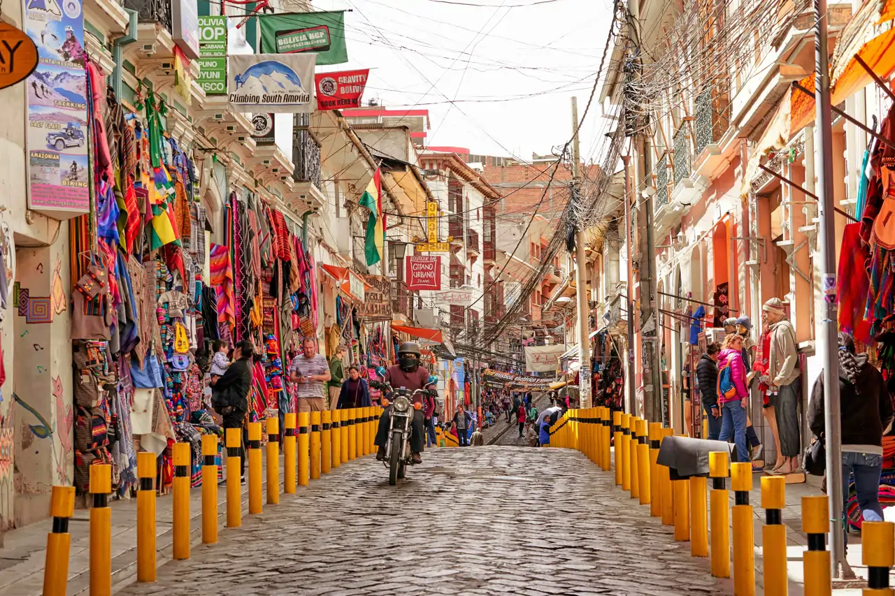
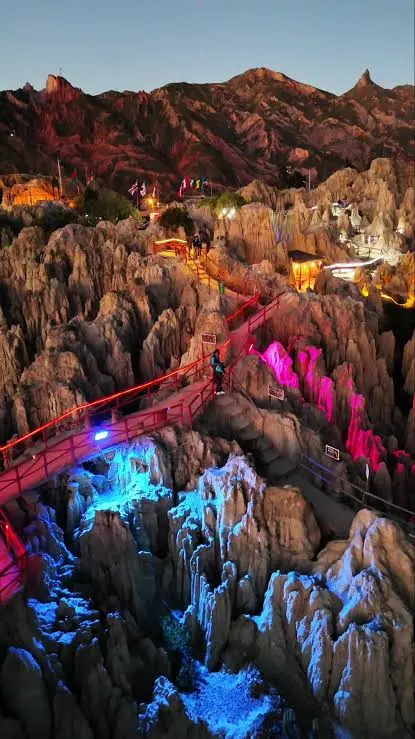
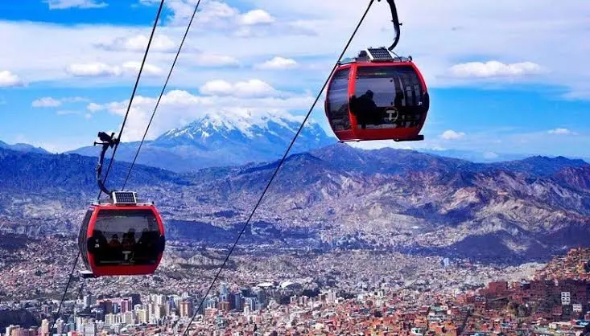
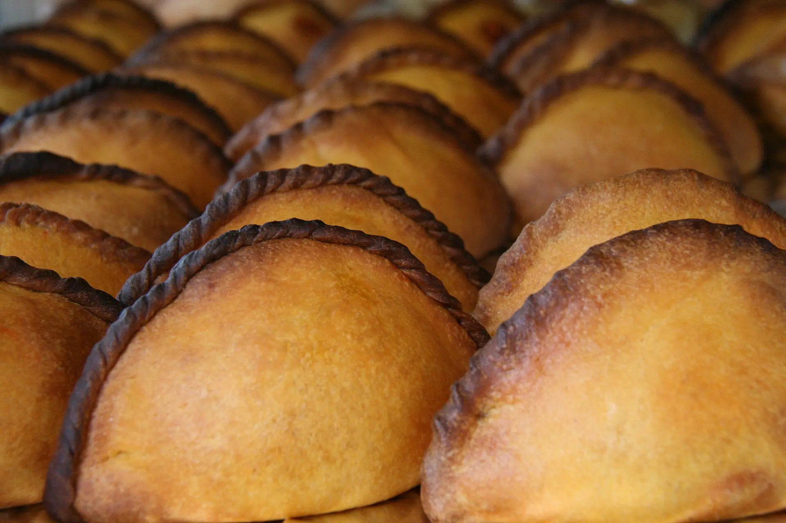
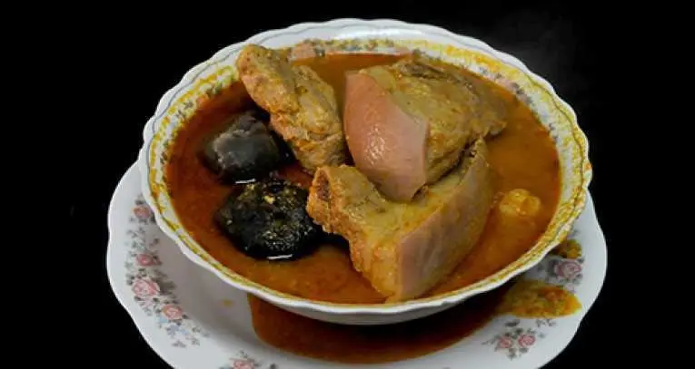

Witch Market
Experience the vibrant atmosphere of the Witch Market, a bustling hub of local culture and commerce.
Enjoy culture and history in this beautiful city!

Experience the vibrant atmosphere of the Witch Market, a bustling hub of local culture and commerce.

Explore the unique landscape of the Moon Valley, a stunning natural wonder surrounded by towering mountains.

Experience the breathtaking views of La Paz from the comfort of a cable car, offering a unique perspective of the city and its surroundings.

Try the famous Salteña, a traditional Bolivian dish that is a must-try when visiting La Paz.

Try the delicious Fricasé, a traditional Bolivian dish that is a must-try when visiting La Paz.
Indulge in the delicious Canela Ice Cream, a traditional Bolivian treat that is a must-try when visiting La Paz.
I have lived at La Paz for over 27 years, so I can show you all of its best parts and hidden secrets.